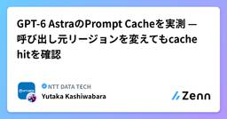
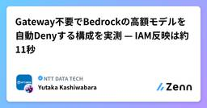
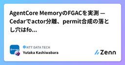
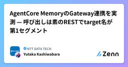

NTT DATA TECHのフィード
https://zenn.dev/p/nttdata_tech
NTT DATA公式アカウントです。 技術を愛するNTT DATAの技術者が、気軽に楽しく発信していきます。 当社のサービスなどについてのお問い合わせは、 お問い合わせフォーム https://nttdata.com/jp/ja/contact-us/ へお願いします。
フィード

【LinuC SA】入社4年目社員のLinuCレベル4システムアーキテクト資格受験記
NTT DATA TECHのフィード
0.はじめにこの記事は、LinuCレベル4システムアーキテクト（LinuC SA）の資格受験記ですこの記事の目的は、学習方法、試験内容・難易度、受験によるメリットなどを紹介することで、LinuC試験に関心を持っていただくことですLinuC SAに興味がある方、特にITアーキテクトを目指している中級～上級エンジニアの参考になれば幸いです本記事は筆者個人の体験・見解に基づくものであり、所属組織を代表するものではありません。また、本記事では秘密保持契約（NDA）を遵守し、実際の試験問題・解答等の内容には触れません。本記事は2026年9月時点の情報をもとにしています。試験制...
1日前

設計に時間をかけようと思う。コードはもう、AIが書いてくれるから。
NTT DATA TECHのフィード
はじめに想像してみてください、大人数が関わるプロジェクトで何人ものエンジニアがそれぞれ数体のAIエージェントを動かしている。数十の変更が同時に生まれて、夜になると一つのブランチに集まってくる。朝、何ができ上がっているでしょう。きれいに動く一つのシステムか。それとも、つぎはぎだらけで噛み合わないシステムか。これを分けるのは、設計だと思います。私はWebアプリケーションのシステム開発を中心にやってきたアーキテクトです。（Javaを中心にエンタープライズシステム系やコンシューマ系のWeb開発を長年）ときどきで立場が変わりますが、それなりに規模の大きいSI界隈で、複数人・複...
1日前

GPT-6 AstraのPrompt Cacheを実測 — 呼び出し元リージョンを変えてもcache hitを確認 1
1
NTT DATA TECHのフィード
1. はじめに長いシステムプロンプトや業務ドキュメントを毎回のリクエストへ載せる構成では、input トークンの単価がそのまま運用コストになります。Prompt Cache は同じプレフィックスの再送分を割引単価に振り替える仕組みですが、実際に割引が乗るかどうかは「キャッシュエントリが同じキーとして扱われるか」で決まります。キーが分かれれば、割引ではなく書き込み単価の上乗せだけが残ります。AWS（Amazon Web Services）は 2026/09/08（米国時間）に OpenAI の GPT-6 Astra を Amazon Bedrock で提供開始しました。http...
3日前

Gateway不要でBedrockの高額モデルを自動Denyする構成を実測 — IAM反映は約11秒
NTT DATA TECHのフィード
1. はじめに生成 AI の利用が広がると、「使った後に請求で気づく」だけではなく、予算到達を検知した後の追加利用をできるだけ早く止める仕組みが必要になります。筆者はこれまで、止める場所を Gateway に置く方法を2通り検証してきました。1つは LLM Gateway（LiteLLM）を自前で構成してユーザー単位の上限を持たせる方法です。https://zenn.dev/nttdata_tech/articles/0aef5de18fae3cもう1つは Amazon Bedrock AgentCore Gateway の Interceptor で Budget を判定する...
4日前

【PV連載 Vol.1】仮想化とは？ハイパーバイザーとVM・コンテナの違い
NTT DATA TECHのフィード
はじめにNTT DATAの刈谷です。私たちは、仮想化基盤を管理・運用するソフトウェア Prossione Virtualization（以下、PV）を開発しています。本記事は「Prossione Virtualizationを理解する・使ってみる」シリーズ Vol.1 です。サーバー仮想化は、いまや社会インフラを支える当たり前の技術になりました。クラウド上のサーバーも、社内のシステムも、その多くは仮想マシン（VM）の上で動いています。ふだんは意識せずに使えてしまう技術ですが、その構造を知っているかどうかで、見えてくるものは変わります。VMを作って使うだけであれば、仮想化の内部ま...
6日前

Claude Fable 5.1 + EFS で企業 AI を安全に実装 — ZDR ロードマップ
NTT DATA TECHのフィード
1. はじめに2026/09/01、Anthropic は新世代フロンティアモデル Claude Fable 5.1 をAmazon Bedrock および Claude Platform on AWS で提供開始しました。同日、AWS（Amazon Web Services）と Anthropic の協業で Enterprise Frontier Safeguards（EFS） をアナウンスしています。企業が直面する本質的なジレンマがあります。それは「フロンティアモデルの高度な推論能力」と「セキュリティ要件としてのゼロデータ保持（ZDR）」の両立です。従来、この両者は相反するも...
6日前

AgentCore MemoryのFGACを実測 — Cedarでactor分離、permit合成の落とし穴はforbidで塞ぐ
NTT DATA TECHのフィード
1. はじめにエージェントの記憶をエンドユーザー単位で分離するとき、AgentCore Gateway に Memory connector の target を置く構成では、Memory から見える呼び出し元が gateway 実行ロールに集約されます。そのため IAM ポリシーの条件キーで「誰のリクエストか」を絞り込むことができません。前回の記事で、JWT の検証と実行ロールだけの状態では user-a のトークンで user-b の会話本文まで取得でき、実行ロールに namespace 単位の Deny を置くと正当な所有者のリクエストまで 403 になることを実測しました。...
7日前

AgentCore MemoryのGateway連携を実測 — 呼び出しは素のRESTでtarget名が第1セグメント
NTT DATA TECHのフィード
1. はじめにエージェントの記憶をテナントやユーザーで分けるとき、分離をどの層で強制するかが設計の分かれ目になります。呼び出し元が IAM プリンシパルなら IAM ポリシーの条件キーで絞り込めますが、エンドユーザーがそれぞれのアイデンティティでエージェントを使う構成では、リクエストを出す IAM プリンシパルが全ユーザーで共通になるため、「誰のリクエストか」を認可へ持ち込む別の手段が必要になります。AWS（Amazon Web Services）は 2026/08/28 に、Amazon Bedrock AgentCore Memory の fine-grained acces...
7日前

AgentCore Web Searchのドメインフィルタを実測 — 範囲外要求は「エラー」と「silent drop」に分かれる
NTT DATA TECHのフィード
1. はじめにエージェントに Web 検索させるとき、検索先ドメインを制限したい要件は多いです。社内ポリシーで参照先を公式ドキュメントに限定したい、古い情報を拾わせたくない、といったものです。AWS（Amazon Web Services）は 2026/08/19 に、Amazon Bedrock AgentCore の Web Search Tool へドメインフィルタと公開日フィルタを追加したことを公式ブログで公開しました。特徴はフィルタが2層あることで、管理者が Gateway target に設定するもの（以下 admin フィルタ）と、エージェントがリクエストごとに指定...
10日前
OpenAI Academyで学ぶChatGPT業務活用
NTT DATA TECHのフィード
はじめに私はこれまで、ChatGPTを文書の下書きや情報整理、分からないことを調べる際に利用してきました。非常に便利で、今では分からないことがあると、検索するより先にChatGPTを開いています。もはや相談相手というより、反射に近いかもしれません。一方で、同じような指示を出しても期待した結果にならないことや、生成された内容のどこを重点的に確認すべきか分からないこともありました。議事録作成のように繰り返し行う業務でも、どの情報を渡し、どの点を人が確認すべきかまでは明確に分かっていないまま使っていました。そこで、OpenAI Academyの「AI Foundations」「Ap...
12日前
AgentCore Memoryのflexible namespace variablesを実測 — 渡し忘れをNull条件で即時エラー化
NTT DATA TECHのフィード
1. はじめにエージェントに長期記憶を持たせるとき、記憶をどの単位で分けるかは設計の入口になります。1つのエージェントを複数の組織やテナントで共有するなら、「A社の会話から抽出した事実がB社の応答に混ざらない」ことを仕組みとして保証したいところです。Amazon Bedrock AgentCore Memory は、長期記憶のレコードを namespace という階層パスで整理します。namespace は memory strategy ごとにテンプレートとして定義し、{actorId} のような変数を埋め込めます。ただし従来使えた変数は {actorId} / {sessio...
12日前
SageMaker Feature StoreのBatchWriteRecordを実測 — 呼び出し25分の1で5.7倍高速
NTT DATA TECHのフィード
1. はじめにAmazon SageMaker Feature Store のオンラインストアへ特徴量を書き込む手段は、長らく PutRecord だけでした。PutRecord は 1回の呼び出しで 1レコード × 1フィーチャーグループ（以下 FG）しか扱えないため、顧客 200人 × FG 2つを更新するだけで 400回の API 呼び出しが必要になります。さらにオンラインストア自体を直接一覧する API がありませんでした。Standard tier ではオフラインストアを Athena で照会する回避策がありますが、リアルタイムの状態ではありません。オフラインストアを持た...
12日前
GitHub Copilot Cloud Agent のローカル版が欲しくて GitLab + Ollama で作ってみた
NTT DATA TECHのフィード
Issue を登録すると、ローカル LLM が内容を読み取って実装を行い、Merge Request までやってくれる。そんな AI 自走環境を GitLab と Ollama で完全ローカル環境としてつくってみました。最近は、GitHub Copilot Cloud Agentのように、Issue を渡すだけで AI が実装から Pull Request の作成まで進めてくれる開発体験が登場しています。似たようなことをローカルで再現できないか、というのが思いついたきっかけです。https://docs.github.com/en/copilot/concepts/agents/cl...
13日前
NVIDIAはGPUだけではない！～Agentic/Physical AIからAI Factory、パートナー戦略まで
NTT DATA TECHのフィード
はじめに近年、生成AIやLLM（大規模言語モデル）の急速な普及を経て、テクノロジーの潮流は単なる「テキスト対話」から、自律的に判断して行動する「Agentic AI（エージェント型AI）」や、リアルな物理環境と連動する「Physical AI（物理AI）」へと決定的な進化を遂げています。NVIDIAと聞くと「高性能なGPUを供給するハードウェアベンダー」というイメージを持ちがちです。しかし、NVIDIAの研修（正確には研修を受けるための事前課題）を受けてみると、その真価はGPU単体だけではなく、GPUを取り巻くメモリやネットワークを含むハードウェア、GPUを最も有効に利用できる...
17日前
【AWS】Aurora MySQLのメトリクスを読み解く ― 第1回 BufferCacheHitRatioとMySQLキャッシュヒット率
NTT DATA TECHのフィード
1. はじめにAmazon Web Services（以下、AWS）におけるデータベースとして代表的なものにAmazon Auroraが挙げられます。AWSで商用環境を構築する際にデータベースを用意する場面でも、有力な選択肢となっています。このAmazon Auroraについて、インターフェースはMySQLやPostgreSQLとの互換性があるものの、中身は分散型ストレージアーキテクチャとなっており、サーバ上で自前でMySQLやPostgreSQLを稼働させる場合と比較して裏側の仕組みが全く異なります。Auroraを利用している中で、CloudWatchのAurora関連のメト...
19日前
Snowflake CoCoでdbtモデル生成を試す：自然言語・設計情報・実装ルールで何が変わるか
NTT DATA TECHのフィード
株式会社NTTデータの久我です。Snowflake Summit 2026では、開発者向けのAIコーディングエージェントである Snowflake CoCo のアップデートが紹介されました。CoCoは、従来Cortex Codeと呼ばれていた開発者向けAIコーディングエージェントで、dbtやデータパイプライン開発などを支援するものとして位置付けられています。CoCoの登場により、単にSQLを補完するためだけに生成AIを用いるのではなく、自然言語で処理の意図を伝えることで、データパイプラインやdbtモデルを生成できる世界が見えてきました。一方で、実務で使うには「自然言語でどこまで伝...
19日前
攻撃者の視点で情報セキュリティ脅威への理解【第三弾：システム脆弱性の特定～悪用】
NTT DATA TECHのフィード
はじめに前回は本シリーズの第二弾として、ペネトレーションテスト（Penetration Test）の基本概念と実施時の注意点を整理したうえで、HTB（Hack The Box）ラボ環境を用いてウェブディレクトリのブルートフォース攻撃を実施し、攻撃者の情報収集手法を確認した。さらに、その結果から防御側の観点で得られる知見をまとめた。まだ読んでいない方は、先にこちらを確認していただきたい。今回は、ペネトレーションテスト実施の続きを解説する。 【要注意】事前の了承を得ないまま勝手にペネトレーションテストを実施することは禁止である。とても重要な内容であるため、上記の文言は今後の記...
20日前
Query-aware Compressionは本当に効く？BedrockでRAGのトークンとコストを実測
NTT DATA TECHのフィード
1. はじめにRAGでは、検索でヒットした複数のチャンクをそのままLLMのプロンプトに詰め込むことがあります。しかし検索結果には質問と無関係な文章も含まれており、コンテキストが大きくなるほど入力トークンが増え、コストやレイテンシにも影響します。この課題への対策として提案されているのが Query-aware Compression（クエリを考慮した圧縮） です。本記事では、この手法を日本語FAQで実際に動かし、「トークンとコストは本当に削減できるのか」を実測で検証しました。結論を先にお伝えすると、Sonnetへの入力トークンは最大94.2%削減でき、入力・出力の両方を含めたコス...
21日前
さらばIPVS、Kubernetesのkube-proxyにnftablesがやってくる日
NTT DATA TECHのフィード
Kubernetes 1.35では、kube-proxyの動作モードのうち、IPVSモードが非推奨（deprecated）になりました。https://kubernetes.io/blog/2025/12/17/kubernetes-v1-35-release/#deprecation-of-ipvs-mode-in-kube-proxy本稿では、このIPVSモードの非推奨化を受け、最近のkube-proxyの動作モードについて調査した内容をまとめます。 kube-proxyとはkube-proxyは、Kubernetesのコアとなるコンポーネントの一つです。Kubernet...
22日前
Azure Container Apps Environmentの分け方と、VNet統合・Private Endpointの基本
NTT DATA TECHのフィード
はじめに直近のAIエージェントシステムの構築案件にて、主に基盤の設計から構築に携わっていました。その中でもMicrosoft Learnなどを読むだけでは理解しづらかった点や、実際の設計・構築を通して悩んだこと、学んだことをまとめます。本記事では2つのテーマを扱います。Azure Container Apps Environmentという概念と分け方Azure閉域化の基本 - VNet統合とPrivate Endpoint基本的な内容も含まれますが、あらかじめご了承ください。 想定読者Azureで業務システムを構築している方Microsoft Learnだけ...
22日前